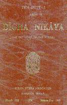

216. Then the Bhagava said to the Venerable Ananda: It may happen that (some among) you have this thought: 'The Doctrine; (lit, the word) is bereft of the Teacher of the Doctrine; our Teacher is no more.' But Ananda, it should not be so considered. Ananda, the Doctrine and Discipline I have taught and laid down to all of you will be your Teacher when I am gone. Ananda, when I have passed away, bhikkhus should not address one another as they do at present by the term 'avuso' (Friend) (irrespective of seniority). Ananda, the senior bhikkhus should address the junior bhikkhus by name, or by family name, or by the term 'avuso'. And the junior bhikkhus should address the senior bhikkhus by the term 'bhante' or 'ayasma' (Venerable Sir). Ananda, after I have passed away, the Samgha, the Order of the bhikkhus, may, if it wishes to, abolish lesser and minor Rules of Discipline. Ananda, after I have passed away, let the Brahma penalty be imposed upon Bhikkhu Channa. "But, Venerable Sir, what is the Brahma penalty?" Ananda, let Bhikkhu Channa say whatever he wishes to. The bhikkhus should neither advise him nor admonish him, nor deter him. 217. Then the Bhagava addressed the bhikkhus thus: O Bhikkhus, if any bhikkhu should happen to have any uncertainty or perplexity regarding the Buddha, or the Dhamma (the Teaching), or the Samgha (the Order of bhikkhus), or Magga, or the Practice, then, bhikkhus, ask (me) questions. Do not let yourselves feel regret later with the thought that 'even though our Teacher was (with us) in our very presence, we were not able to ask him questions personally in return.' When this was said, the bhikkhus remained silent. For a second time, the Bhagava said .............. For a third time, the Bhagava said: O Bhikkhus, if any bhikkhu should happen to have any uncertainty or perplexity regarding the Buddha, or the Dhamma, or the Samgha, or Magga, or the Practice, then, bhikkhus, ask (me) questions. Do not let yourselves feel regret later with the thought that 'even though our Teacher was (with us) in our very presence, we were not able to ask him questions personally in return.' For the third time, too, the bhikkhus remained silent. Then the Bhagava said to the bhikkhus: O Bhikkhus, it may be that you do not ask questions out of respect for the Teacher. Then, bhikkhus, let a bhikkhu tell a companion (his uncertainty or perplexity). Even when this was said, the bhikkhus continued to remain silent. Then the Venerable Ananda said to the Bhagava: "Wonderful it is, Venerable Sir! Marvellous it is, Venerable Sir! I believe that in this community of bhikkhus not a single bhikkhu has uncertainty or perplexity regarding the Buddha, or the Dhamma, or the Samgha, or Magga, or the Practice." Ananda, you say this only out of faith. Indeed, Ananda, the Tathagata knows for certain that in this community of bhikkhus not a single bhikkhu has uncertainty or perplexity regarding the Buddha, or the Dhamma, or the Samgha, or Magga, or the Practice. Ananda, amongst these five hundred bhikkhus, even the least (in attainment) is a Sotapanna, a Stream-enterer, not liable to be reborn in any apaya realm of misery, assured (of reaching desirable realms of existence or of teaching the end of dukkha), bound for (the three higher levels of Insight, culminating in) Enlightenment. 218. Then the Bhagava said to the bhikkhus: O Bhikkhus, I say this now to you: "All conditioned and compounded things (sankhara) have the nature of decay and disintegration. With mindfulness endeavour diligently* (to complete the task)"** These were the last words of the Tathagata. * Mindfulness in cultivating tranquillity and
insight development meditation, samatha vipassana bhavana. ** To complete the task: i.e., to be liberated from the round of rebirths, samsara, by achieving Arahatta Magga and Phala. |
| 219. Then the Bhagava entered upon the first Jhana. Rising from the first Jhana, he entered upon the second Jhana. Rising from the second Jhana, he entered upon the third Jhana. Rising from the third Jhana, he entered upon the fourth Jhana. Rising from the fourth Jhana, he entered upon and became absorbed in the akasanancayatana (Sphere of Infinity of Space). Rising from the samapatti 1 of Infinite Space, he entered upon and became absorbed in the vinnanancayatana (Sphere of Infinity of Consciousness). Rising from the samapatti of Infinite Consciousness, he entered upon and became absorbed in the akincannayatana (Sphere of Nothingness). Rising from the samapatti of Nothingness, he entered upon and became absorbed in the Nevasannanasannayatana (Sphere of Neither Sanna Nor Non-sanna). Rising from the samapatti of Neither Sanna Nor Non-sanna, he entered upon and became absorbed in Nirodhasamapatti, in which Sanna-and-sensation (i.e., Consciousness) cease. Then the Venerable Ananda asked the Venerable Anuruddha, "Bhante Anuruddha, has the Bhagava passed away ?" (The Venerable Anuruddha replied,) "Avuso Ananda the Bhagava has not passed away. He is absorbed in Nirodhasamapatti" Then the Bhagava, rising from the Nirodhasampatti, entered upon and became absorbed in the Sphere of Neither sanna nor Non-sanna. Rising from the samapatti of Neither sanna Nor Non-sanna, he entered upon and became absorbed in the Sphere of Nothingness. Rising from the samapatti of Nothingness, he entered upon and became absorbed in the Sphere of Infinite Consciousness. Rising from the samapatti of Infinite Consciousness, he entered upon and became absorbed in the Sphere of Infinite Space. Rising from the Samapatti of Infinite Space, he entered upon the fourth Jhana. Rising from the fourth Jhana, he entered upon the third Jhana. Rising from the third Jhana, he entered upon the second Jhana. Rising from the second Jhana, he entered upon the first Jhana. Rising from the first Jhana, he entered upon the second Jhana. Rising from the second Jhana, he entered upon the third Jhana. Rising from the third Jhana, he entered upon the fourth Jhana. Immediately after rising from the fourth Jhana, the Bhagava passed away, realizing parinibbana. 220. When the Bhagava passed away, simultaneously with his passing away, a great, terrible, hair-raising and gooseflesh-causing earthquake occurred. Also rolls of thunder burst forth continuously. When the Bhagava passed away, at the moment of his passing away, the Sahampati Brahma recited this verse: "Even such an incomparable person as the Self-Enlightened Tathagata, the Teacher endowed with Ten Strengths (consisting of his perfect comprehension in ten fields of knowledge), has to pass away in this world. All beings in this world must inevitably give up the aggregate of mental and physical phenomena." 221. When the Bhagava passed away, immediately on his passing away, Sakka, King of the devas, recited this verse: "All conditioned and compounded things (sankhara) are indeed impermanent. Arising and decay are inherent in them. Having come into existence, they cease. The realization of Nibbana on their cessation is blissful peace." 222. When the Bhagava passed away, immediately on his passing away, the Venerable Anuruddha recited these Verses: "The craving-free Sage has passed away, intent on the peace of Nibbana. There is no more inhalation or exhalation of breath of the Buddha, he who had a steadfast mind and equanimity. "The Buddha endured his physical suffering with an unshaken mind. Like a flame extinguished, the mind of that Buddha has found release." 223. When the Bhagava passed away, immediately on his passing away, the Venerable Ananda recited this verse: "When the Enlightened One, replete with all noble qualities, passed away, then at that moment there occurred the fearsome great earthquake; then at that moment there occurred the hair-raising, goose flesh-causing great earthquake." 224. When the Bhagava passed away, some bhikkhus who were at that place and who were not free from the passions wept with upraised hands, flung themselves down, rolled forward and backward, and rolled hither and thither, (lamenting) "Too soon has the Bhagava realized parinibbana! Too soon has the Sugata realized parinibbana! Too soon has the Eye (i.e, the Possessor of the Eye of Wisdom) disappeared from the world!" But those bhikkhus who were free from sensual passion could bear it, mindfully and deliberately reflecting: "All conditioned and compounded things (sankhara) are impermanent. How then can it be possible to get that (permanence) in this (compounded nature)?" 225. Then the Venerable Anuruddha said to the bhikkhus: "Enough; friends! Do not grieve, do not lament. Had not the Bhagava proclaimed from former times that there must be separation (while living), severance (through death) and sundering (through being in different states of existence) from all that are dear and beloved? Friends, in this matter, that which has the nature of arising, of appearing, of being compounded, and of decay and dissolution, how can the wish that it should not disintegrate and disappear be realized? There can be no such possibility. Friends, the devas are reproachful." "But, Venerable Anuruddha, in what condition and in what state of mind are the devas?" "Friend Ananda, devas who are (standing) in the sky, taking (i.e., transforming) the sky as firm ground, weep with dishevelled hair, weep with upraised hands, fling themselves down, roll forward and backward, roll hither and thither, (lamenting)'Too soon has the Bhagava realized parinibbana! Too soon has the Sugata realized parinibbana! Too soon has the Eye (i.e., the Possessor of the Eye of Wisdom) disappeared from the world!" "Friend Ananda, devas who are (standing) on the ground, taking (i.e., transforming) the earth as firm ground, weep with dishevelled hair, weep with upraised hands, fling themselves down, roil forward and back ward, roll hither and thither, (lamenting) 'Too soon has the Bhagava; realized parinibbana! Too soon has the Sugata realized parinibbana! Too soon has the Eye (i.e., the Possessor of the Eye of Wisdom) disappeared from the world!" "But those devas who are free from sensual passion can bear it, mindfully and deliberately reflecting: All conditioned and compounded things have the nature of impermanence. How then can it be possible to get that (permanence) in this (compounded nature)?" Then the Venerable Anuruddha and the Venerable Ananda spent the rest of the night in religious discourse. 226. Then the Venerable Anuruddha said to the Venerable Ananda, "Go, Friend Ananda, enter Kusinara and tell the Malla princes of Kusinara, 'O Vasetthas (i.e.. Malla Princes), the Bhagava has passed away. Do now as seems fitting to you'." The Venerable Ananda assented, saying to the Venerable Anuruddha, "Very well, Venerable Sir." He then in the morning rearranged his robes, and taking alms-bowl and great robe entered Kusinara with a companion. At that time, the Mala princes were assembled at the council hall on that very business (concerning the Buddha's parinibbana). Then the Venerable Ananda went to the council hall of the Kusinara Malla princes and said to them, "O Vasetthas, the Bhagava has passed away. Do now as seems fitting to you." On hearing those words of the Venerable Ananda, the Malla princes, their sons, daughters, daughters-in-law, and their wives felt miserably grief stricken, sad at heart and oppressively sorrowful in mind. Some wept with dishevelled hair, with upraised hands; they flung themselves down, and rolled forward and backward, hither and thither, (lamenting) "Too soon has the Bhagava realized parinibbana! Too soon has the Sugata realized parinibbana! Too soon has the Eye (i.e., the Possessor of the Eye of Wisdom) disappeared from the world!" 1. Jhana is a term used for the state of deep mental absorption in an object of meditation, samapatti is a term used for attainment of sustained deep mental absorption in an object of meditation. When Jhana is sustained, it is termed samapatti. The term Jhana is usually used for attainment in the first four stages of deep mental absorption, i.e., the four rupa jhanas. The term Samapatti is used for attainment in the next stages of deep mental absorption, i. e., the four arupa Jhana and also for attainment of phala and nirodha. However, the term samapatti is sometimes used to denote both the rupa and arupa Jhana. In the nirodha samapatti there is no object of meditation, because of the cessation of sanna, Consciousness. |
| 227. Then the Kusinara Malla princes gave orders to their men, saying "Gather flower-garlands, perfumes and all kinds of musical instruments in Kusinara." Then the Kusinara Malla princes, taking flower-garlands, perfumes and all kinds of musical instruments, as well as five hundred sets of clothing, went to where the body of the Bhagava was, in the Sal grove of the Mallas at the road-bend. And there they passed the day in paying homage, respect, reverence and honour to the remains of the Bhagava, with dance, song, music, flowers and perfumes; and they made canopies of cloth and prepared pavilions of cloth. Then the Kusinara Malla princes thought: "It is too late today to cremate the remains of the Bhagava; Tomorrow we shall perform the cremation." Then the second day also was passed by the Mallas in paying homage, respect, reverence and honour to the remains of the Bhagava, with dance, song, music, flowers and perfumes, and with the erection of canopies and pavilions of cloth. In the same way the third day also was passed; the fourth day also was passed; the fifth day also was passed; the sixth day also was passed. Then, on the seventh day, this thought occurred to the Kusinara Malla princes: "We shall cremate the body of the Bhagava south of the town, carrying it to the south side beyond the town by the Southern road outside the town, paying homage, respect, reverence and honour to the remains of the Bhagava, with dance, song, music, flowers and perfumes." 228. And thereupon eight foremost elders amongst the Malla princes, after washing their heads and donning new clothes, tried to lift up the body of the Bhagava, (thinking) "We shall (now) lift up the body of the Bhagava", but they were not able to do so. Then the Kusinara Malla princes said to the Venerable Anuruddha, "Venerable Anuruddha, what is the reason, what is the cause that although eight of the foremost elders amongst the Malla princes, after washing their heads and donning new clothes, tried to lift up the body of the Bhagava, (thinking) 'We shall (now) lift up the body of the Bhagava', they could not do so?" "Vasetthas, (it is because) your intention is different from the intention of the devas." "What, Venerable Sir, is the intention of the devas?" "Vasetthas, your intention is this: 'We shall cremate the body of the Bhagava south of the town, carrying it to the south side beyond the town by the southern road outside the town, paying homage, respect, reverence and honour to the remains of the Bhagava,with dance,song, music, flowers and perfumes.'The intention of the devas, however, is this: 'Paying homage, respect, reverence and honour to the remains of the Bhagavai, with celestial dance, song, music, flowers and perfumes, we shall carry the remains of the Bhagava north of the town by the northern road, then entering the town by the northern gate and proceeding to the centre of the town by the central road, we shall leave by the eastern gate, and shall perform thc cremtion ceremony at the Makutabandhana shrine1 of the Malla princes on the east side of the town'." "Venerable Sir, let it be according to the intention of the devas," 229. At that time, all of Kusinara, including even fence-borders, rubbish heaps and dust bins, became covered knee-deep with celestial mandarava flowers. Then the devas and the Kusinara malla princes, paying homage, respect, reverence and honour to the remains of the Bhagava, with both celeshal and human dance, song, music, flowers and perfumes, carried the remains of the Bhagava north of the town by the northern road, then entering the town by the northern gate and proceeding to the centre of the town by the central road, they left by the eastern gate, and laid down (the bier with) the body of the Bhagava at the Makutabandhana shrine of the Malla princes on the east side of the town. 230. Then the Kusinara Malla princes asked the Venerable Ananda, "Venerable Ananda, what should be done to the body of the Tathagata?" "O Vasetthas, the body of the Tathagata should be treated in the same way as is done to the remains of a Universal Monarch." "Venerable Ananda, what is done to the remains of a Universal Monarch?" "O Vasetthas, the body of a Universal Monarch is wrapped up in new cloth. After being wrapped up in new cloth, (the body is) wrapped up in carded cotton wool. After being wrapped up in carded cotton wool, (it is) again wrapped up in new cloth. In this way the body of the Universal Monarch is wrapped up in five hundred successive layers (of cloth and cotton wool). Then it is enclosed in a golden oil vat and covered over by another golden vat. Then a pyre of all kinds of perfumed wood is built, and the body of the Universal Monarch is cremated. A stupa (i.e., a monumental mound with a dome), to (the honour of) the Universal Monarch is built at the junction of four highways. O Vasetthas, this is what is done to the body of a Universal Monarch." "O Vasetthas, in the same way as is done to the body of a Universal Monarch, so should it be done to the body of the Tathagata. A stupa to (the honour of) the Tathagata should be built at the junction of four highways. At that stupa people will make offerings of flowers or incense or scented powder, or will pay homage, or will feel reverence in their minds. To such people, benefit and happiness will accrue for a long time." Then the Kusinara Malla princes gave orders to their men, to collect (all) the carded cotton wool of the Malla princes. Then the Kusinara Malla princes wrapped up the body of the Bhagava in new cloth. After being wrapped up in new cloth, (the body was) wrapped up in carded cotton wool. After being wrapped up in carded cotton wool, (it was) wrapped up in new cloth. In this way the body of the Bhagava was wrapped up in five hundred successive layers (of cloth and cotton wool). Then it was enclosed in a golden oil vat and covered over by another golden vat. Then a pyre of all kinds of perfumed wood was built, and the body of the Bhagava was placed on the pyre. (1. Shrine: The Commentary says that this was the royal hall where the Malla princes put on the ceremonial dress. It was called a shrine, out of courtesy.) |
| 231. Now at that time the Venerable Mahakassapa was on the way from Pava to Kusinara together with a large company of bhikkhus, numbering five hundred. Then the Venerable Mahakassapa left the road and sit down at the foot of a tree. At that time a certain Ajivaka, (who was a naked ascetic), was journeying towards Pava, taking (with him) a mandarava flower from Kusinara. Now the Venerable Mahakassapa saw that Ajivaka coming from a distance and seeing him said to that Ajivaka, "Friend, do you know our Teacher ?" "Yes, friend, I know of him. It is seven days now since the Samana Gotama passed away. (In fact,) I have brought this celestial mandarava flower from there (i.e., from the place where the Buddha passed away)." (Thereupon), some of the bhikkhus who were not (yet) free from tne passions, from amongst the five hundred bhikkhus with the Venerable Mahakassapa, wept with upraised hands, flung themselves down, rolled forward and backward, and rolled hither and thither, (lamenting) 'Too soon has the Bhagava realized parinibbana! Too soon has the Sugata realized parinibbana! Too soon has the Eye (i.e., the Possessor of the Eye of Wisdom) disappeared from the world!" But those bhikkhus who were free from sensual passion could bear it, mindfully and deliberately reflect ing: "All conditioned and compounded things are impermanent. How then can it be possible to get that (permanence) in this (compounded nature) ?" 232. Now at that time Subhadda 1 who had become a bhikkhu only in old age was amongst that assembly. And that Subhadda who had become a bhikkhu in his old age said thus to the (other) bhikkhus: "Enough, friends. Do not grieve, do not lament. We are well rid of that great Samana. He had oppressed us by (saying) 'This is proper for you; that is not proper for you'. But now we shall do what we like; we shall not do what we do not like." Then the Venerable Mahakassapa said to the bhikkhus: "Enough, Avuso; do not grieve, do not lament. Had not the Bhagava expounded from long before the (inevitable) facts of separation (while living), severance (through death), and sundering (through being in different states of existence) from all that are dear and beloved? Avuso, in this matter, that which has the nature of arising, of appearing, of being compounded, and of decay and dissolution, how can the wish that it, even the body of the Tathagata, should not disintegrate and disappear be realized? Did not the Bhagava expound from long before that there can be no such possibility?" 233. Now at that time four foremost Malla princes, after washing their heads and donning new clothes, (thought) "We will set fire to the Bhagava's funeral pyre," (and tried to ignite it) but were not able to do so. Then the Kusinara Malla princes asked the Venerable Anuruddna thus: "Venerable Anuruddha, what is the reason, what is the cause that although four foremost Malla princes, after washing their heads and donning new clothes, tried to kindle the funeral pyre of the Bhagava, they were not able to set it on fire ?" "O Vasetthas, the wish (lit., the intention) of the devas is different." "Venerable Sir, what is the wish of the devas ?" "O Vasetthas has, the wish of the devas is this: The Venerable Mahakassapa is journeying along the way from Pava to Kusinara, with a great company of bhikkhus, numbering five hundred; let not the Bhagava's funeral pyre catch fire until the Venerable Mahakassapa has paid homage with his head at the feet of the Bhagava." "Venerable Sir, let it be according to the wish of the devas." 234. Then the Venerable Mahakassapa came to the funeral pyre of the Bhagava at the Makutabandhana shrine of the Malla princes in Kusinara. When he had come up to it, he arranged his robe over one shoulder and under the other, and with the palms of his hands put together and lifted up in reverence he walked three times round the pyre with his right side to it, and paid homage with his head against the feet of the Bhagava. The five hundred bhikkhus also (who had come with the Venerable Mahakassapa) arranged their robes over one shoulder and under the other, and with their palms put together and lifted up in reverence, they walked three times round the pyre with their right side to it, and paid homage with their heads against the fect of the Bhagava. When the Venerable Mahakassapa and the five hundred bhikkhus had paid their homage, the funeral pyre of the Bhagava spontaneously burst into flames. 235. From the outer tegument (thin skin), or tho corium (thick under-skin) or the flesh, or the sinews 2, or the synovic3 fluid of the body of the Bhagava which was burnt away, neither ash nor soot 4was to bo seen. Only the bone-relics5 remained. Just as, for instance, when butter or oil is burnt away, neither ash nor soot is to be seen, so from the outer tegument, or the corium, or the flesh, or the sinews, or the synovic fluid of the body of the Bhagava which was burnt away, neither ash nor soot was to be seen. Only the bone-relics remained. Of those five hundred sets of cloth wrappings, only two were not consumed by fire, the innermost and the outermost. When the body of the Bhagava had been burnt up, a stream of water appeared from the sky and extinguished the pyre. A stream of water also spurted out from those Sal trees which had water in them and extinguished the pyre of the Bhagava. The Kusinara Malla princes, too, extinguished the pyre with water scented with all kinds of perfumes. Then the Kusinara Malla princes surrounded the bone-relics of the Bhagava (placed) in the council hall with a cordon of spearmen and bowmen6, and for an entire seven days paid homage, respect, reverence and honour to the relics with dance, song, music and perfumes. 1. This Subbadda is a different person from the wandering asceticof the same name mentioned in Paras 212-215. 2. the sinews: nharu or naharu: sinew, tendon, muscle. 3. synovic or synovial fluid: lasika: synovia, a greasy albuminous fluid secreted from certain glands in the joints. 4. soot: masi: the fine particles of ashes, or soot. The Burmese Nissaya renders it as charred pieces of the Buddha's body. 5. bone-relics: sarira: consisting of small pieces of bones ranging in size from a mustard seed to half a kidney-bean as well as seven larger pieces, namely, the upper fore part of the skull, two collar bones, and four eye-teeth. 6. (lit. , with a latticc work of spears and a fence of bows.) |